前処理: Pandasを使いこなそう#
データサイエンスや機械学習では、 データ分析を始める前に、データ分析が行いやすいように加工する必要があります。 このような処理を 前処理 と呼びます。
今までは、 比較的データサイエンスや機械学習の学習用に加工された前処理済みのデータを使ってきましたが、 Pandasを使いこなせるようになって、前処理をできるようになりましょう。
モジュールの準備
import numpy as np
import pandas as pd
import matplotlib.pyplot as plt
import seaborn as sns
try:
import japanize_matplotlib #matplotlibの日本語化
except ModuleNotFoundError:
!pip install japanize_matplotlib
import japanize_matplotlib
sns.set(font="IPAexGothic") #日本語フォント設定
!pip install -q kogi
import kogi
データフレームの作成と保存#
Pandas のデータフレームは、色々な方法で作ることができます。
今まで習った方法主な方法
pd.read_csv('file.csv'): CSVファイルから読み込むpd.DataFrame(data): データ列からデータフレームを作る
まず、練習用の小さなデータフレームを用意してみましょう。
データの作成#
まず、データ列からデータフレームを作る方法をみましょう。
基本は、次のように、カラム名をキー、データ列を値とした辞書を定義し、
そこからpd.DataFrame()を使って、データフレームを作成します。
data = {
'名前': ['相葉雅紀', '松本潤', '二宮和也', '大野智', '櫻井翔'],
'出身': ['千葉', '東京', '東京', '東京', '東京'],
'生年': [1982, 1983, 1983, 1980, 1982],
'身長': [175, 172, 168, 166, 171],
'血液型': ['AB', 'A', 'A', 'A', 'A'],
}
df = pd.DataFrame(data)
もう一つは、データ列をタプルにして、データ列のリストを作ります。
columns = ['名前', '出身', '生年', '身長', '血液型']
data = [
('相葉雅紀', '千葉', 1982, 175, 'AB'),
('松本潤', '東京都', 1983, 172, 'A'),
('二宮和也', '東京都', 1983, 168, 'A'),
('大野智', '東京都', 1980, 166, 'A'),
('櫻井翔', '東京都', 1982, 171, 'A'),
]
df = pd.DataFrame(data, columns=columns)
どちらの方法でも同じデータフレームが得られます。
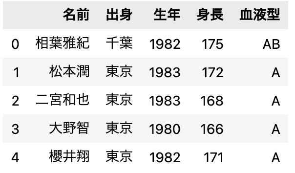
データが間違っているとご指摘を受けますが..
一部間違っていると指摘をよく受けます。 どうぞ、各自でご自由に、ご修正して練習にお使いください。
データフレームの保存#
Pandas で操作した表データは、.to_csv()でCSVファイルに保存できます。
Excelで開いて文字化けするときは？
Windows は、標準でShiftJIS文字コードを使っています。 そのため、先頭にBOMと呼ばれる文字コードを識別する記号を入れると、 文字化けなくCSVファイルを保存されます。 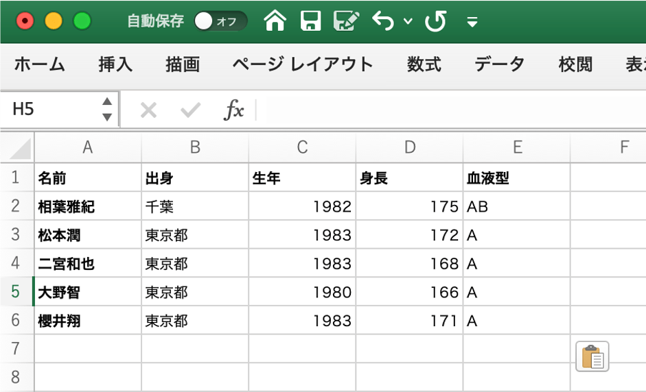
基本操作#
Pandas は、表データを効率よく操作できます。 Pandas 用語では、表データのことをデータフレーム(DataFrame)と呼びますが、本資料では表データと呼びます。
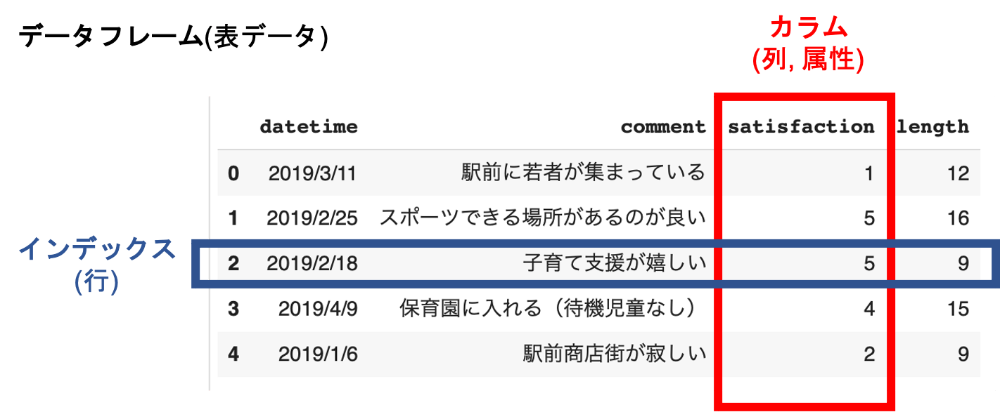
確認：Pandas用語
- データフレーム: 表データのこと
- カラム: 列方向のデータ
- インデックス: 行方向のデータ
カラム名からデータ列を取り出す#
Pandasは、今ままできてきたとおり、カラムごとのデータ処理が多くなります。
まず、カラム名'名前'のデータを取り出してみましょう。
取り出したデータ列は、Pythonの列(シーケンス）として、
for文などでひとつずつ処理することができます。
複数のデータ列を取り出して同時に処理したい時は、zipを使います。
列データの追加#
新しいカラム、つまり縦方向の列データを追加してみましょう。
表データ中には、５人分のデータがあるため、 リストとして５人分のデータを代入すると、新しい属性を追加することができます。
エクセルのようにカラムの値から計算して、新しいカラムを作ることもできます。
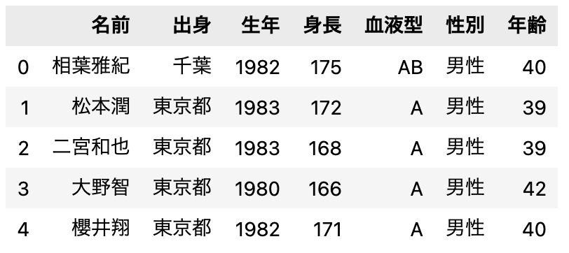
n行目のデータを取り出す#
表データの行ごとへのアクセスは、.ilocプロパティを通して行ます。
Pandasは強力なデータ操作の機能を持っているのであまり使うことはありませんが、 データフレームから１行ずつ取り出して処理することもできます。
['相葉雅紀' '千葉' 1982 175 'AB' '男性' 40]
['松本潤' '東京都' 1983 172 'A' '男性' 39]
['二宮和也' '東京都' 1983 168 'A' '男性' 39]
['大野智' '東京都' 1980 166 'A' '男性' 42]
['櫻井翔' '東京都' 1982 171 'A' '男性' 40]
セルの値#
カラム名とインデックスの組み合わせで、 表データをセルの値を指定して取り出すことができます。
データベースの操作#
Pandas のリレーショナル代数の操作をみていきましょう。
データベース実習を履修している人は、SQLを思い出しながら試していきましょう。
SQLって何？
データベースを操作するためのクエリー言語です。 データベース操作では定番になっています。
射影(projection)#
射影（projection）は、表データからカラムを限定した表データを取り出す操作です。
Pandasでは、抽出したいカラム名をリストにして渡します。
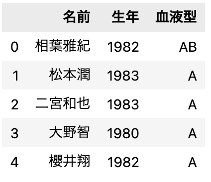
機械学習では、 説明変数と目的変数を取り出すときによく用います。
選択(selection)#
選択は、SQLでは指定した条件に合う行を取り出す基本操作です。
Pandasでは、
query()メソッドでSQL風の条件を記述する方法と
NumPy風にマスクしてフィルタする方法の２種類あります。
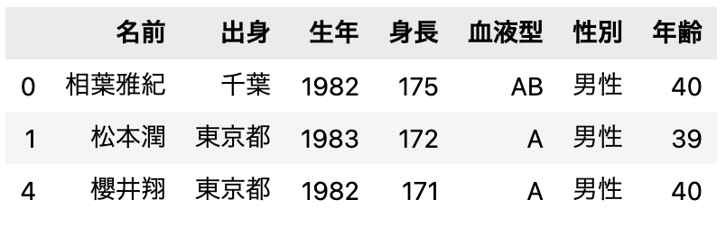
より複雑な条件も書くことができます。
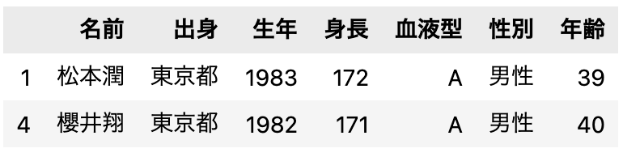
グループごとの集計#
groupby() は、同じ値を持つデータをまとめて、統計処理を行いときに使います。
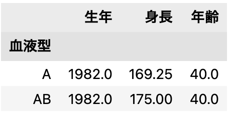
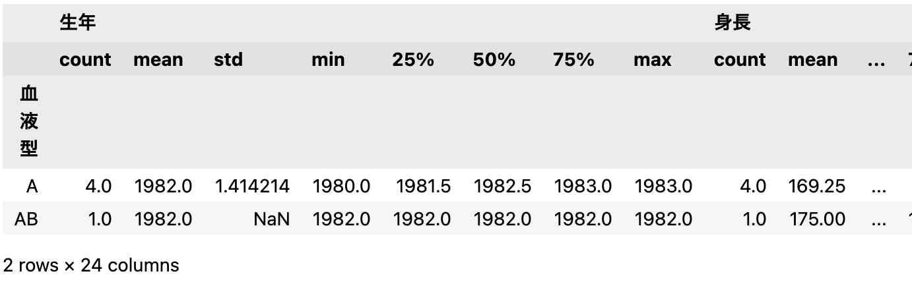
groupby()は、グループごとに集計して操作するときに、重宝します。
それぞれのグループごとに表(df)を取り出すときは、次のように操作します。
A
名前 出身 生年 身長 血液型 性別 年齢
1 松本潤 東京都 1983 172 A 男性 39
2 二宮和也 東京都 1983 168 A 男性 39
3 大野智 東京都 1980 166 A 男性 42
4 櫻井翔 東京都 1982 171 A 男性 40
AB
名前 出身 生年 身長 血液型 性別 年齢
0 相葉雅紀 千葉 1982 175 AB 男性 40
ピボットテーブルとクロス集計⭐️#
ピボットテーブルは、クロス集計に使われる便利ツールです。
index: 縦軸に展開するカラムを指定columns: 横軸に展開するカラムを指定values: 集約する値カラムを指定aggfunc: 集約方法を指定
ピボットテーブルを用いると、集計結果を表データに変換して取り出せるようになります。
表の連結#
必要なデータが複数のファイルに保存されていて、 複数のデータフレームの一つにまとめてデータ分析する機会は多くあります。
まず、もうひとつデータフレームを用意します。
df2 = pd.DataFrame({
'名前': ['大野智', '相葉雅紀', '二宮和也', '松本潤', 'カビゴン'],
'身長': [166, 176, 168, 173, 210],
'体重': [52.0, 58.0, 52.0, 62.0, 460.0],
})
df2.head()
カビゴン？
練習用に少し変なデータにしてあります。
単純な連結#
最も簡単方法は、単純に表を連結することです。
単純に縦方向に連結したいときは、pd.concat()を使って連結します。
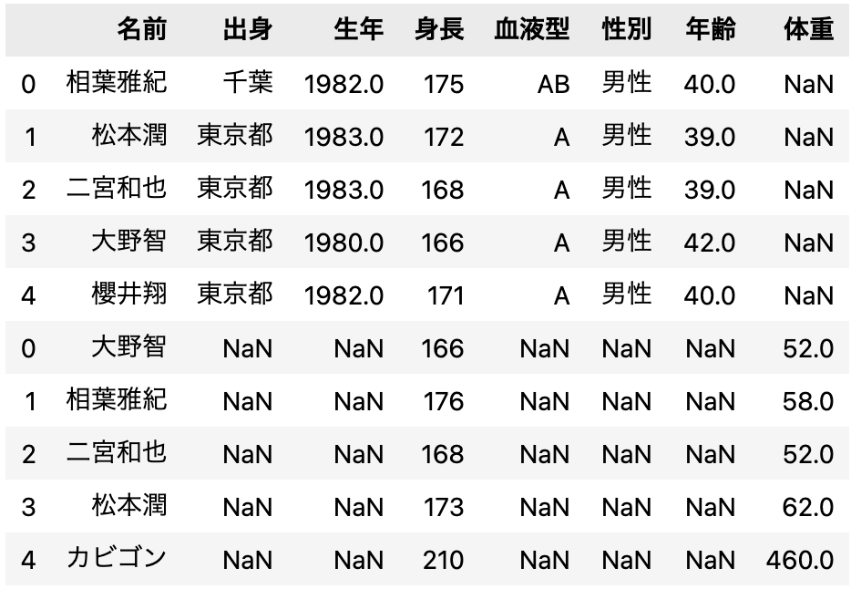
横方向に連結したいときは、axis=1のオプションをつけます。
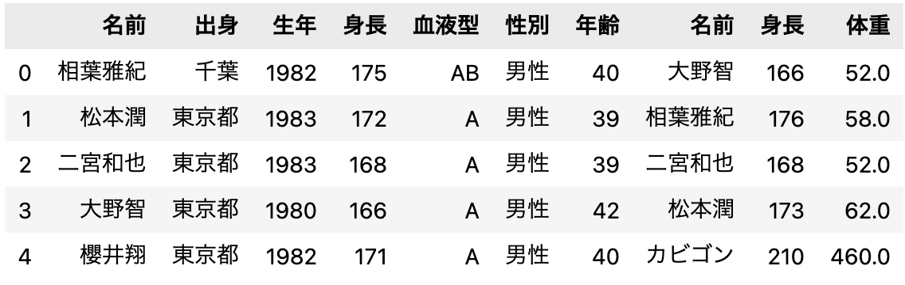
表データの結合(join)#
表データの結合は、ふたつの表データのある属性をキーにして、 キーが同じ値であれば一つの行にまとめる操作です。
Pandasでは、pd.merge()で結合します。
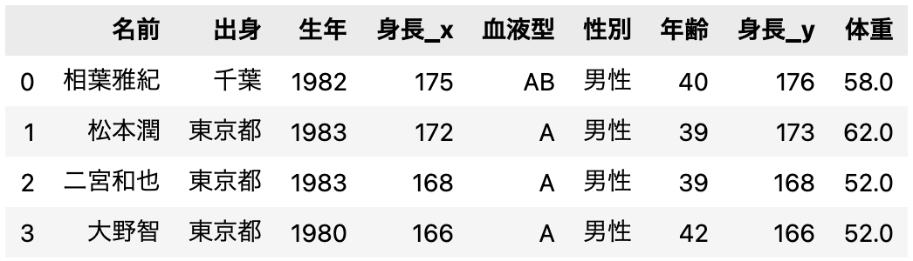
ふたつの表データは結合されましたが、データが一部消えてしまいました。 これは、Pandas では何も指定しなければ、一番条件の厳しい内部結合が用いられるためです。
結合の方法
- 内部結合
inner: 両方にキーが存在するとき結合 - 外部結合
outer: どちらか一方にキーが存在するとき結合 - 左外部結合
left: 左側にキーが存在するとき - 右外部結合
right: 右側にキーが存在するとき
leftが良さそうですが、outerで結合してみます。
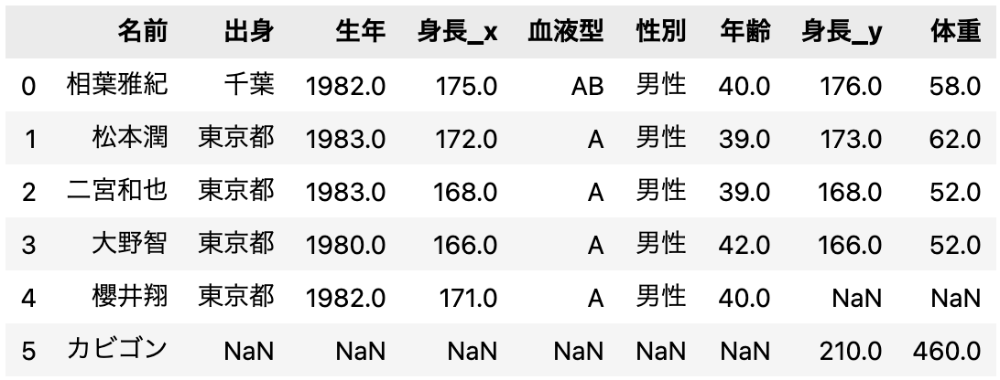
テーブルの変更(inplace)#
少しデータを整頓しておきましょう。
df3 = pd.merge(df, df2, on='名前', how='outer')
df3.drop(5, axis=0, inplace=True) #index=5を消す
df3.drop('身長_y', axis=1, inplace=True) # '身長_y'を消す
df3.rename(columns={'身長_x': ' 身長'}, inplace=True)
df.reindex(columns=['名前', '出身', '年齢', '身長', '体重'])
df3.head()
pandas の表操作は書き換えない
pandas の表操作は、新しい表データを返すようになっています。だから、別の変数名で別の表データとして操作することもできます。
だから、同じ変数名で置き換えることもできます。 データを直接、書き換えたいときは、inplace=Trueをつけます。
練習問題#
Pandas を使ってデータの前処理の練習をしましょう。
Jリーガー、プロ野球、大相撲#
プロ野球、Jリーガー、大相撲に関するデータをひとつにまとめよう。
職業は、プロ野球、Jリーガー、相撲とするBMIは身長と体重から計算する- 身長の高い順にソートして、
sports.csvとして保存する - (余力があったら)散布図などを表示してデータの傾向を見てみよう。
データの入手先
鈴木 雅也、渡辺 将人、井上 史斗. 「数式をプログラムするってつまりこういうこと」より、公開データを使わせてもらいます。
https://raw.githubusercontent.com/massongit/math-program-book/master/9_data/サッカー/Jリーグ選手身長体重.csv
チーム,ポジション,背番号,名前,生年月日,身長,体重
川崎フロンターレ,GK,1,チョン ソンリョン,1985/01/04,191,90
川崎フロンターレ,GK,24,安藤 駿介,1990/08/10,185,79
https://raw.githubusercontent.com/massongit/math-program-book/master/9_data/プロ野球/プロ野球選手身長体重.csv